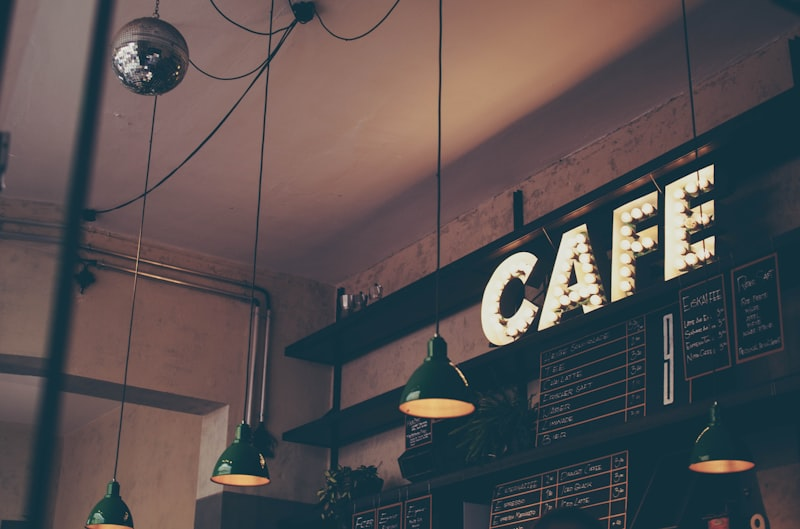

View Case Study & Demo
UMKM & Web
Client Showcase
F&B / Local Business
Frontend & UI/UX
KALA Coffee & Roastery
A high-converting, modern static website crafted for local Indonesian cafes and coffee shops. Built to drive customer acquisition with direct WhatsApp ordering, an interactive filterable menu with Rupiah pricing, and table reservation booking.
Tailwind CSS
JavaScript
WhatsApp API
UMKM Solution